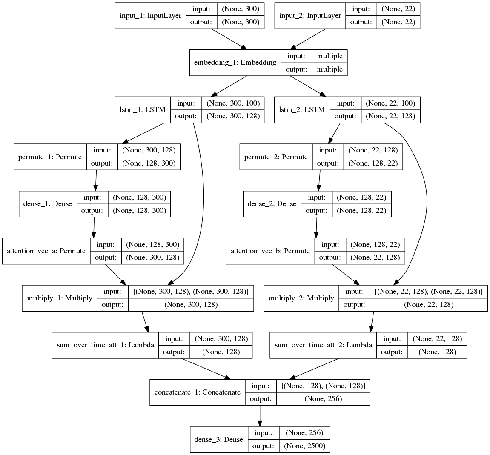
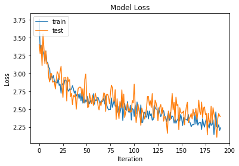
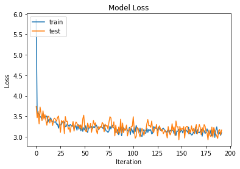

Attention
It is widely agreed that a good starting point for a sequence-to-sequence model is a recurrent neural network and attention. In this post we'll look at applying attention to our current models.
This Github repository by Philippe Rémy contains a great walk through for applying attention in Keras.

Attention, as applied by Philippe, is fairly straightforward to implement in Keras.
The process is as follows:
- An input is provided in with the dimensions: BS (batch_size), TS (time_steps), and I (input_dimension). I represents the length of each time step, e.g. if we had a one-hot vector with a length equal to a vocabulary size of 2500, I would be 2500. Time steps are the same as our sequence elements, e.g. if a sequence has a length of 22, time steps = 22. Batch size is the size used to group samples, e.g. for training.
- This is followed by a Permute operation. This swaps around the first and second dimensions (excluding the batch size). So you have (batch_size, input_dim, time_steps). For example, if we had (None, 22, 2500) this would be swapped to (None, 2500, 22).
- As stated in the code the Reshape line is just for housekeeping - the array is aleady switched to being input_dim, time_steps. We might remove this line in our code.
- We then generate a dense layer, which is just a matrix multiplication with an output of size TS. This gives us a vector the same size as the number of our timesteps. Softmax is applied on the output to normalise as a probability (e.g. values are from 0-1 and sum to 1).
- If a single attention vector is required the mean over all dimensions is taken - a single dimension vector may be useful as a simplification when visualising. We could also take the sum over the timesteps following the multiply operation.
- Some more housekeeping is then performed to again switch around the first and second dimensions (i.e. switch back to the original form).
- Finally we perform a matrix multiplication using our obtained attention vector (a_probs) on the inputs. We then output the result of the multiplication, which is the application of the attention.
Our attention weights are thus stored as parameters of the Dense layer.
The attention weights can be applied before or after our recurrent neural network (in our initial models an LSTM). When applying our weights after the LSTM we need to flatten the output to get a vector.
Loading our Data (Again)
import pickle
import os
PIK = "claim_and_title.data"
if not os.path.isfile(PIK):
# Download file
!wget https://benhoyle.github.io/notebooks/title_generation/claim_and_title.data
with open(PIK, "rb") as f:
print("Loading data")
data = pickle.load(f)
print("{0} samples loaded".format(len(data)))
print("\n\nAdding start and stop tokens to output")
data = [(c, "startseq {0} stopseq".format(t)) for c, t in data]
print("\n\nAn example title:", data[0][1])
print("----")
print("An example claim:", data[0][0])
Loading data
30000 samples loaded
Adding start and stop tokens to output
An example title: startseq System and method for session restoration at geo-redundant gateways stopseq
----
An example claim:
1. A method for managing a backup service gateway (SGW) associated with a primary SGW, the method comprising:
periodically receiving from the primary SGW at least a portion of corresponding UE session state information, the received portion of session state information being sufficient to enable the backup SGW to indicate to an inquiring management entity that UEs having an active session supported by the primary SGW are in a live state; and
in response to a failure of the primary SGW, the backup SGW assuming management of IP addresses and paths associated with said primary SGW and transmitting a Downlink Data Notification (DDN) toward a Mobility Management Entity (MME) for each of said UEs having an active session supported by the failed primary SGW to detach from the network and reattach to the network, wherein each DDN causes the MME to send a detach request with a reattach request code to the respective UE.
Applying to Ludwig Model with Shared Embedding
We will look to apply attention to our best current model: the Ludwig model with shared GloVe embeddings. We will apply our attention mechanism after the application of the encoder and decoder LSTMs. This effectively weights the output of the encoding over the two sequences (each encoder/decoder sequence has its own attention vector). We'll import the Ludwig Model class, create a new class and then overwrite the build_model method.
We need to remember to amend the definition of the LSTM such that sequences are returned. This then enables the correct dimensionality of input for our attention layer.
This post explains the general functioning of the LSTM cell in Keras and the return of sequences and hidden states.
This post explains attention.
Some things to note:
- Some posts and text books refer to the output of an LSTM as
y, others ash. The hidden state is also sometimes referred to ash(e.g. when used withy) and at other timesc(e.g. withh). - Some posts also refer to the output of an LSTM as the last output following an input series of timesteps. This is equivalent to the output of the Keras LSTM if
return_sequences=False. To apply attention we need the output of the LSTM for each timestep (i.e. we need to setreturn_sequences=True.
from ludwig_model import LudwigModel
/home/ben/anaconda3/envs/tf_gpu_source/lib/python3.6/site-packages/h5py/__init__.py:36: FutureWarning: Conversion of the second argument of issubdtype from `float` to `np.floating` is deprecated. In future, it will be treated as `np.float64 == np.dtype(float).type`.
from ._conv import register_converters as _register_converters
Using TensorFlow backend.
How this Attention Mechanism Works
Let's start by considering one sample. We can effectively ignore the first batch size (BS) dimension (0) in our code.
The attention mechanism set out below starts with an input from an encoding LSTM. As return sequences is true, the encoding LSTM outputs an array of length time steps (TS), where each time step has an associated encoding vector (I or h or y). In our case, we have an LSTM with a latent dimension of 128, which outputs encoding vectors of length 128 for each time step. Our Keras LSTM output for each sample is thus a matrix of size (300, 128), i.e. 300 timesteps each having a vector of length 128.
A normal Dense layer takes an input vector and maps it to an output vector, e.g. X > Y where X is length L1 and Y is length L2. If we pass a matrix to a Dense layer, e.g. 500 samples of X - of size (500, L1) we would get a matrix of (500, L2) out. This is the same if we are doing things in batches - then dense layer is still applied to the last dimension (e.g. still L1>L2 even if we had batches of 64, e.g. input - (64, 500, L1).
When we permute, we swap around our sample. So we have a sample that is the timestep data for each feature (e.g. as how each hidden dimension changes over the timesteps). E.g. [ft1, ft2, ft3 ... fT] where T = 300 or 22 for the encoder and the decoder. The output of the dense layer is a (pseudo-) probability across the 300 or 22 time steps. I.e. a weighting for each time step for the feature. This is repeated for each feature so we have F_1=[w1, w2, ... wT], F_2=..., F_latent_dim = [...] - i.e. 128 features with weights for 300 or 22 time steps (128, 300/22). We then swap the matrix around again, so our weights are arranged in timestep order, e.g. T_1=[w_f1, w_f2, ..., w_f_latent_dim] where each column / vector will sum to 1. This gives us a matrix of (300/22, 128).
The later Mulitply operation multiplies these weights against the original LSTM encoding.
In descriptions of attention we have a context vector that, for a output timestamp, is the weighted sum of the attention weights and the original encoding. Each encoding (h) has a weight (a).
Our issue is that the output of our Multiply operation is a matrix of (128, 22) (as we are applying weights to each individual dimension of the encoding). We need to reduce this down to a vector. The matrix has weighted terms for each latent dimension and each timestamp. We could simplify this by only having one weight term per timestamp in the earlier calculations. In our case, we will use the fact that attention is normally calculated as the sum of the attention weights and the encoded context vectors, as such we can take the sum of our weighted data (e.g. the output of our multiply step) across the timesteps.
from keras.models import Model
from keras.layers import Input, LSTM, Dense, Embedding, concatenate, merge, Permute, Reshape, \
Flatten, multiply, AveragePooling1D, RepeatVector, Lambda
from keras import backend as K
class LWAtt(LudwigModel):
""" Version of our Ludwig model with attention."""
def _build_model(self):
""" Build the model. """
print("Building model")
self._load_shared_embedding()
# Define inputs
inputs_encoder = Input(shape=(self.encoder_seq_length,))
inputs_decoder = Input(shape=(self.decoder_seq_length,))
# Define Shared Embedding Layer
Shared_Embedding = Embedding(
output_dim=self.word_embedding_size,
input_dim=self.num_encoder_tokens,
weights=[self.embedding_matrix]
)
# Ah our problem is that our shared embedding has encoder length but we are also using on decoder
embedded_inputs_encoder = Shared_Embedding(inputs_encoder)
embedded_inputs_decoder = Shared_Embedding(inputs_decoder)
# Define LSTMs - these return output state h for each timestep (as we have r_s=True)
encoder_LSTM = LSTM(self.latent_dim, return_sequences=True)
decoder_LSTM = LSTM(self.latent_dim, return_sequences=True)
# So output of this is, e.g. BS, 300, 128, i.e. an h vector for each TS
encoder_context = encoder_LSTM(embedded_inputs_encoder)
# Add attention to encoder encodings - here we are swapping the dims to BS, 128, 300
a = Permute((2, 1))(encoder_context)
# Here we apply a dense layer to each a matrix
a = Dense(self.encoder_seq_length, activation='softmax', use_bias=False)(a)
# Single attention vector
a_probs = Permute((2, 1), name='attention_vec_a')(a)
att_mul_1 = multiply([encoder_context, a_probs])
# Sum over time dimension
att_mul_1 = Lambda(lambda x: K.sum(x, axis=1), name="sum_over_time_att_1")(att_mul_1)
# summary input model
decoder_context = decoder_LSTM(embedded_inputs_decoder)
# Add attention to answer encodings
b = Permute((2, 1))(decoder_context)
b = Dense(self.decoder_seq_length, activation='softmax')(b)
# Single attention vector
b_probs = Permute((2, 1), name='attention_vec_b')(b)
att_mul_2 = multiply([decoder_context, b_probs])
# Sum over timesteps
att_mul_2 = Lambda(lambda x: K.sum(x, axis=1), name="sum_over_time_att_2")(att_mul_2)
# decoder output model
decoder1 = concatenate([att_mul_1, att_mul_2], axis=1)
outputs = Dense(self.num_decoder_tokens, activation='softmax')(decoder1)
# tie it together [article, summary] [word]
self.model = Model(inputs=[inputs_encoder, inputs_decoder], outputs=outputs)
self.infdec = self.model
print("Compiling model")
self.model.compile(loss='categorical_crossentropy', optimizer='adam')
machine = LWAtt(
encoder_texts=[d[0] for d in data],
decoder_texts=[d[1] for d in data],
encoder_seq_length=300,
decoder_seq_length=22,
num_encoder_tokens=2500,
num_decoder_tokens=2500,
latent_dim=128,
weights_file="class_LWattmodel_sin_att.hdf5",
training_set_size=250
)
Fitting tokenizers
Our input data has shape (30000, 300) and our output data has shape (30000, 22)
Generating training and test data
Building model
Loading GloVe 100d embeddings from file
Found 400000 word vectors.
Building embedding matrix
Compiling model
No existing weights found
machine.print()
Training Model:
__________________________________________________________________________________________________
Layer (type) Output Shape Param # Connected to
==================================================================================================
input_1 (InputLayer) (None, 300) 0
__________________________________________________________________________________________________
input_2 (InputLayer) (None, 22) 0
__________________________________________________________________________________________________
embedding_1 (Embedding) multiple 250000 input_1[0][0]
input_2[0][0]
__________________________________________________________________________________________________
lstm_1 (LSTM) (None, 300, 128) 117248 embedding_1[0][0]
__________________________________________________________________________________________________
lstm_2 (LSTM) (None, 22, 128) 117248 embedding_1[1][0]
__________________________________________________________________________________________________
permute_1 (Permute) (None, 128, 300) 0 lstm_1[0][0]
__________________________________________________________________________________________________
permute_2 (Permute) (None, 128, 22) 0 lstm_2[0][0]
__________________________________________________________________________________________________
dense_1 (Dense) (None, 128, 300) 90000 permute_1[0][0]
__________________________________________________________________________________________________
dense_2 (Dense) (None, 128, 22) 506 permute_2[0][0]
__________________________________________________________________________________________________
attention_vec_a (Permute) (None, 300, 128) 0 dense_1[0][0]
__________________________________________________________________________________________________
attention_vec_b (Permute) (None, 22, 128) 0 dense_2[0][0]
__________________________________________________________________________________________________
multiply_1 (Multiply) (None, 300, 128) 0 lstm_1[0][0]
attention_vec_a[0][0]
__________________________________________________________________________________________________
multiply_2 (Multiply) (None, 22, 128) 0 lstm_2[0][0]
attention_vec_b[0][0]
__________________________________________________________________________________________________
sum_over_time_att_1 (Lambda) (None, 128) 0 multiply_1[0][0]
__________________________________________________________________________________________________
sum_over_time_att_2 (Lambda) (None, 128) 0 multiply_2[0][0]
__________________________________________________________________________________________________
concatenate_1 (Concatenate) (None, 256) 0 sum_over_time_att_1[0][0]
sum_over_time_att_2[0][0]
__________________________________________________________________________________________________
dense_3 (Dense) (None, 2500) 642500 concatenate_1[0][0]
==================================================================================================
Total params: 1,217,502
Trainable params: 1,217,502
Non-trainable params: 0
__________________________________________________________________________________________________
None
We have the same number of parameters. However, this time our 128 LSTM outputs have been subject to the attention weighting.
cf:
__________________________________________________________________________________________________
Layer (type) Output Shape Param # Connected to
==================================================================================================
input_1 (InputLayer) (None, 300) 0
__________________________________________________________________________________________________
input_2 (InputLayer) (None, 22) 0
__________________________________________________________________________________________________
embedding_1 (Embedding) (None, 300, 100) 250000 input_1[0][0]
input_2[0][0]
__________________________________________________________________________________________________
lstm_1 (LSTM) (None, 128) 117248 embedding_1[0][0]
__________________________________________________________________________________________________
lstm_2 (LSTM) (None, 128) 117248 embedding_1[1][0]
__________________________________________________________________________________________________
concatenate_1 (Concatenate) (None, 256) 0 lstm_1[0][0]
lstm_2[0][0]
__________________________________________________________________________________________________
dense_1 (Dense) (None, 2500) 642500 concatenate_1[0][0]
==================================================================================================
Total params: 1,126,996
Trainable params: 1,126,996
Non-trainable params: 0
__________________________________________________________________________________________________
None
from keras.utils.vis_utils import model_to_dot
from IPython.display import Image
Image(model_to_dot(machine.model, show_shapes=True).create_png(prog='dot'))

machine.train(epochs=2)
Training for epoch 0
Training on batch 0 to 250 of 24000
Train on 2639 samples, validate on 655 samples
Epoch 1/1
2639/2639 [==============================] - 114s 43ms/step - loss: 3.7594 - val_loss: 3.4036
Training on batch 250 to 500 of 24000
Train on 2484 samples, validate on 658 samples
Epoch 1/1
2484/2484 [==============================] - 100s 40ms/step - loss: 3.3319 - val_loss: 3.2739
Training on batch 500 to 750 of 24000
Training on batch 23500 to 23750 of 24000
Train on 2373 samples, validate on 637 samples
Epoch 1/1
2373/2373 [==============================] - 79s 33ms/step - loss: 2.4597 - val_loss: 2.4743
Training on batch 23750 to 24000 of 24000
Train on 2593 samples, validate on 590 samples
Epoch 1/1
2593/2593 [==============================] - 86s 33ms/step - loss: 2.4561 - val_loss: 2.5036
------------------------------------------
Sample of claim text: 1 a stylus comprising a first end configured for contact with a capacitive touchscreen a second end opposite the first end and a housing comprising an arrangement of two or more materials that each ha
Predicted title is: method and apparatus for determining a touch screen
Actual title is: stylus devices having variable electrical characteristics for capacitive
---
Sample of claim text: 1 a method comprising receiving at a first computer system associated with a first entity a transaction authorization request that specifies an amount to a receiving party and that specifies a first f
Predicted title is: method and system for managing a network
Actual title is: allocating partial payment of a transaction amount using an allocation rule
---
Sample of claim text: 1 a method for analyzing with a temporal resolution below at least one response of a test person to at least one input comprising providing a computer server having a processor a memory and a computer
Predicted title is: system and method for managing a data
Actual title is: method system and computer program for automated of measurements in response to
---
Sample of claim text: 1 a method comprising receiving by a call session control function device a request to set up a communication session the request being associated with a particular user equipment device determining b
Predicted title is: method and apparatus for providing a network
Actual title is: selection of a policy and charging rules function device
---
Sample of claim text: 1 a secure identification and identity registration system comprising copying means j for making a digital copy of an identity document k belonging to the user to be identified at least one server a f
Predicted title is: method and system for providing a web service
Actual title is: secure system and process for identification and identity registration
---
Training for epoch 1
Training on batch 0 to 250 of 24000
Train on 2639 samples, validate on 655 samples
Epoch 1/1
2639/2639 [==============================] - 87s 33ms/step - loss: 2.5527 - val_loss: 2.4565
Training on batch 250 to 500 of 24000
Train on 2484 samples, validate on 658 samples
Epoch 1/1
2484/2484 [==============================] - 82s 33ms/step - loss: 2.3472 - val_loss: 2.4692
Training on batch 500 to 750 of 24000
Train on 2586 samples, validate on 583 samples
Epoch 1/1
2586/2586 [==============================] - 85s 33ms/step - loss: 2.5075 - val_loss: 2.6221
....and so on and on and on...
Training on batch 23500 to 23750 of 24000
Train on 2373 samples, validate on 637 samples
Epoch 1/1
2373/2373 [==============================] - 81s 34ms/step - loss: 2.2022 - val_loss: 2.4022
Training on batch 23750 to 24000 of 24000
Train on 2593 samples, validate on 590 samples
Epoch 1/1
2593/2593 [==============================] - 88s 34ms/step - loss: 2.2375 - val_loss: 2.3999
------------------------------------------
Sample of claim text: 1 a computer implemented method for ranking and grouping comprising a receiving information about types of for a from a database b ranking the types of based on predetermined criteria c grouping the r
Predicted title is: method and system for generating a data
Actual title is: and tool
---
Sample of claim text: advertisement is associated with the products or services provided by a third party receiving via a user interface associated with a shopping website a selection of products or services by one or more
Predicted title is: method and system for providing a user interface
Actual title is: for digital multimedia capture using control cloud voice digital multimedia and advertising and sell products or services via cloud gaming environments
---
Sample of claim text: 1 a computer implemented method of estimating one or more of parameters surface shape and index of represented in a image having one or more known illumination directions and a single known viewing di
Predicted title is: method and apparatus for detecting a 3d image
Actual title is: illumination spectrum recovery
---
Sample of claim text: 1 a website comprising a processor and a computer readable storage medium comprising program code executable by the processor the program code comprising an display component configured to display an
Predicted title is: method and system for providing content in a media
Actual title is: for website and website menu
---
Sample of claim text: 1 a computer implemented method executed by one or more processors the method comprising storing by the one or more processors a content item in computer readable memory the content item being to one
Predicted title is: method and system for providing content in a web page
Actual title is: identifying shared content stored by a service
---

machine.example_output(5)
------------------------------------------
Sample of claim text: 1 an image encoding system including one or more processing devices comprising an being at least one of the one or more processing devices configured to perform prediction on a current block included
Predicted title is: image processing apparatus and method for controlling the same
Actual title is: random access image encoding system and method
---
Sample of claim text: 1 a method of and data transfer between a controller device and a target device using a control signal comprising the transfer of a data word over a data bus from the target device to the controller d
Predicted title is: method and apparatus for controlling a memory device
Actual title is: method for transferring address information
---
Sample of claim text: coupled to the host computer wherein each of the first storage system and the second storage system comprises a plurality of storage devices configuring a plurality of raid redundant array of groups o
Predicted title is: system and method for managing data in a storage system
Actual title is: storage system comprising function for reducing power consumption
---
Sample of claim text: 1 a data processing apparatus comprising a network interface capable of coupling to a network a plurality of printer each configured to convert data to a form that is specific to one or more compatibl
Predicted title is: method and apparatus for providing a image
Actual title is: print server
---
Sample of claim text: 1 a network communication system for communicating with software applications through a proxy server and a firewall the network communication system comprising an electronic device to i transfer a uni
Predicted title is: method and system for providing a network
Actual title is: wireless internet product system
---
------------------------------------------
Sample of claim text: 1 a computer implemented method for ranking and grouping comprising a receiving information about types of for a from a database b ranking the types of based on predetermined criteria c grouping the r
Predicted title is: method and system for generating a data
Actual title is: and tool
---
Sample of claim text: advertisement is associated with the products or services provided by a third party receiving via a user interface associated with a shopping website a selection of products or services by one or more
Predicted title is: method and system for providing a user interface
Actual title is: for digital multimedia capture using control cloud voice digital multimedia and advertising and sell products or services via cloud gaming environments
---
Sample of claim text: 1 a computer implemented method of estimating one or more of parameters surface shape and index of represented in a image having one or more known illumination directions and a single known viewing di
Predicted title is: method and apparatus for detecting a 3d image
Actual title is: illumination spectrum recovery
---
Sample of claim text: 1 a website comprising a processor and a computer readable storage medium comprising program code executable by the processor the program code comprising an display component configured to display an
Predicted title is: method and system for providing content in a media
Actual title is: for website and website menu
---
Sample of claim text: 1 a computer implemented method executed by one or more processors the method comprising storing by the one or more processors a content item in computer readable memory the content item being to one
Predicted title is: method and system for providing content in a web page
Actual title is: identifying shared content stored by a service
---
Comments on Training
This performance seems pretty good. We are getting titles that appear to make grammatical sense and the model has picked up on the dominant models of title form, with some variation.
It would be good to visualise our attention mechanism to see if it is working as expected.
The training and test loss start to diverge around 250 iterations. Then the model starts overfitting on the training data. We could probably do with some regularisation to prevent overfitting and keep the test loss in sync with the training loss.
We also need to set up the save weights so it only saves in the test loss has not increased by a margin.
There is also no explicit non-linearity in the model.
A big caveat is that I am still not sure that this implementation of attention works in the way it is meant to work. A todo would be to implement a lower level attention model that builds a custom Keras layer. It would also be good to build a visualiser for the attention vector. But that is too much work for this little project...
Regularisation
Let's try with some regularisation using Dropout and L2 regularizer.
from keras.regularizers import l2 # L2-regularisation
l2_lambda = 0.01
class LWAtt_reg(LudwigModel):
""" Version of our Ludwig model with attention."""
def _build_model(self):
""" Build the model. """
print("Building model")
self._load_shared_embedding()
# Define inputs
inputs_encoder = Input(shape=(self.encoder_seq_length,))
inputs_decoder = Input(shape=(self.decoder_seq_length,))
# Define Shared Embedding Layer
Shared_Embedding = Embedding(
output_dim=self.word_embedding_size,
input_dim=self.num_encoder_tokens,
weights=[self.embedding_matrix]
)
# Ah our problem is that our shared embedding has encoder length but we are also using on decoder
embedded_inputs_encoder = Shared_Embedding(inputs_encoder)
embedded_inputs_decoder = Shared_Embedding(inputs_decoder)
# Define LSTMs - these return output state h for each timestep (as we have r_s=True)
encoder_LSTM = LSTM(self.latent_dim, return_sequences=True, dropout=0.2, recurrent_dropout=0.2)
decoder_LSTM = LSTM(self.latent_dim, return_sequences=True, dropout=0.2, recurrent_dropout=0.2)
# So output of this is, e.g. BS, 300, 128, i.e. an h vector for each TS
encoder_context = encoder_LSTM(embedded_inputs_encoder)
# Add attention to encoder encodings - here we are swapping the dims to BS, 128, 300
a = Permute((2, 1))(encoder_context)
a = Dense(self.encoder_seq_length, activation='softmax', use_bias=False, kernel_regularizer=l2(l2_lambda))(a)
a_probs = Permute((2, 1), name='attention_vec_a')(a)
att_mul_1 = multiply([encoder_context, a_probs])
# Sum over time dimension
att_mul_1 = Lambda(lambda x: K.sum(x, axis=1), name="sum_over_time_att_1")(att_mul_1)
decoder_context = decoder_LSTM(embedded_inputs_decoder)
# Add attention to answer encodings
b = Permute((2, 1))(decoder_context)
b = Dense(self.decoder_seq_length, activation='softmax', use_bias=False, kernel_regularizer=l2(l2_lambda))(b)
b_probs = Permute((2, 1), name='attention_vec_b')(b)
att_mul_2 = multiply([decoder_context, b_probs])
att_mul_2 = Lambda(lambda x: K.sum(x, axis=1), name="sum_over_time_att_2")(att_mul_2)
decoder1 = concatenate([att_mul_1, att_mul_2], axis=1)
outputs = Dense(self.num_decoder_tokens, activation='softmax', kernel_regularizer=l2(l2_lambda))(decoder1)
# tie it together [article, summary] [word]
self.model = Model(inputs=[inputs_encoder, inputs_decoder], outputs=outputs)
self.infdec = self.model
print("Compiling model")
self.model.compile(loss='categorical_crossentropy', optimizer='adam')
reg_machine = LWAtt_reg(
encoder_texts=[d[0] for d in data],
decoder_texts=[d[1] for d in data],
encoder_seq_length=300,
decoder_seq_length=22,
num_encoder_tokens=2500,
num_decoder_tokens=2500,
latent_dim=128,
weights_file="class_LWattmodel_att_reg.hdf5",
training_set_size=250
)
Fitting tokenizers
Our input data has shape (30000, 300) and our output data has shape (30000, 22)
Generating training and test data
Building model
Loading GloVe 100d embeddings from file
Found 400000 word vectors.
Building embedding matrix
Compiling model
No existing weights found
reg_machine.train(epochs=2)
Training for epoch 0
Training on batch 0 to 250 of 24000
Train on 2639 samples, validate on 655 samples
Epoch 1/1
2639/2639 [==============================] - 41s 16ms/step - loss: 5.8585 - val_loss: 3.7435
Training on batch 250 to 500 of 24000
Train on 2484 samples, validate on 658 samples
Epoch 1/1
2484/2484 [==============================] - 39s 16ms/step - loss: 3.5613 - val_loss: 3.4640
Training on batch 23500 to 23750 of 24000
Train on 2373 samples, validate on 637 samples
Epoch 1/1
2373/2373 [==============================] - 38s 16ms/step - loss: 3.1435 - val_loss: 3.0183
Training on batch 23750 to 24000 of 24000
Train on 2593 samples, validate on 590 samples
Epoch 1/1
2593/2593 [==============================] - 42s 16ms/step - loss: 3.1329 - val_loss: 3.1292
------------------------------------------
Sample of claim text: 1 a method for retrieving and viewing in a single web browser instance operating on a user's computer comprising the sequential steps of from said single web browser a search request to an internet se
Predicted title is: method and method for a a a a a a
Actual title is: multi window internet search with webpage
---
Sample of claim text: 1 a rotation amount detecting device for a rotation body comprising a first rotation body provided with a first surface portion being in contact with a sheet being the first rotation body rotating alo
Predicted title is: method and method for a a a a a a a
Actual title is: rotation amount detecting device for rotation body length measuring device and image forming apparatus
---
Sample of claim text: 1 a system comprising a control module configured to output a signal a voltage module directly coupled to the control module a complex programmable logic device coupled to the control module for recei
Predicted title is: method and method for a a a a a a
Actual title is: system
---
Sample of claim text: 1 a compressed domain compression apparatus comprising a partial decoder that partially an encoded piece of data to generate a partially decoded piece of data a least significant bit plane removal uni
Predicted title is: method and method for a a a a a a
Actual title is: compressed domain system and method for compression in encoded data
---
Sample of claim text: 1 a method for correcting in magnetic imaging comprising acquiring at least one artifact calibration scan with a timing that corresponds to that of an actual diagnostic imaging scan acquiring at least
Predicted title is: method and method for a a a a a a
Actual title is: correction of in magnetic imaging
---
Training for epoch 1
Training on batch 0 to 250 of 24000
Train on 2639 samples, validate on 655 samples
Epoch 1/1
2639/2639 [==============================] - 42s 16ms/step - loss: 3.2278 - val_loss: 3.1951
Training on batch 250 to 500 of 24000
Train on 2484 samples, validate on 658 samples
Epoch 1/1
2484/2484 [==============================] - 40s 16ms/step - loss: 3.0517 - val_loss: 3.1360
...etc etc...note to self, turn off keras output...but it's so much fun watching our loss....
Training on batch 23500 to 23750 of 24000
Train on 2373 samples, validate on 637 samples
Epoch 1/1
2373/2373 [==============================] - 38s 16ms/step - loss: 3.0335 - val_loss: 3.0485
Training on batch 23750 to 24000 of 24000
Train on 2593 samples, validate on 590 samples
Epoch 1/1
2593/2593 [==============================] - 42s 16ms/step - loss: 3.0978 - val_loss: 3.1624
------------------------------------------
Sample of claim text: 1 a chip adapted in a computer system comprising a computer system environment information monitoring module for monitoring a computer system environment information of the computer system a control c
Predicted title is: method and apparatus for a data
Actual title is: chip and computer system
---
Sample of claim text: 1 a method of manufacturing digital display the method comprising manufacturing a plurality of digital display the plurality of display comprising a first display panel having a first size and shape w
Predicted title is: method and apparatus for a data
Actual title is: display with different
---
Sample of claim text: 1 a method comprising generating a list of computers that are part of a selected domain wherein the list is automatically with the list of computers by selecting the domain via a job scheduler module
Predicted title is: method and system for a data
Actual title is: job scheduler for remote maintenance of servers and
---
Sample of claim text: 1 a computer implemented method for managing device information comprising under control of a computer system configured with executable instructions monitoring by a first sensor of a mobile device mo
Predicted title is: method and apparatus for a data
Actual title is: managing information of a user device
---
Sample of claim text: output hardware units and meeting corresponding to said plurality of output hardware units said output hardware unit that performed authentication of the user being to output material saved in the sto
Predicted title is: method and apparatus for a data
Actual title is: material output system for outputting meeting material for participant in meeting
---

Comments on Dropout & Regularisation
Interesting.
While adding Dropout and regularisation appears to keep the training and test loss in sync, the model seems to struggle more to find a optima - the loss is higher and the model appears to find a pattern and stick to it (trapped in local minima?).
I think in this case we will leave regularisation.